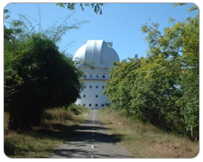

Kavalur observatory is located in Kavalur in the Javadu Hills in Alangayam, Vellore District. The Kavalur Observatory is located in a 100 acre forest land in Tamil Nadu, which is strewn with a variety of greenery of tropical region

besides a number of medicinal plants with an occasional appearance of some wild life like deer, snakes and scorpions. Several varieties of birds have also been spotted in the campus.The observatory is at an altitude of 725m above mean sea level (longitude 78° 49.6' E ; latitude 12° 34.6' N). Apart from being reasonably away from city lights and industrial areas, the location has been chosen in order to be closer to the earth's equator for covering both northern and southern hemispheres with equal ease.
In addition, its longitudinal position is such that it is the only major astronomical facility between Australia and South Africa for observing the southern objects.